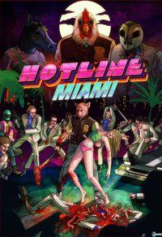
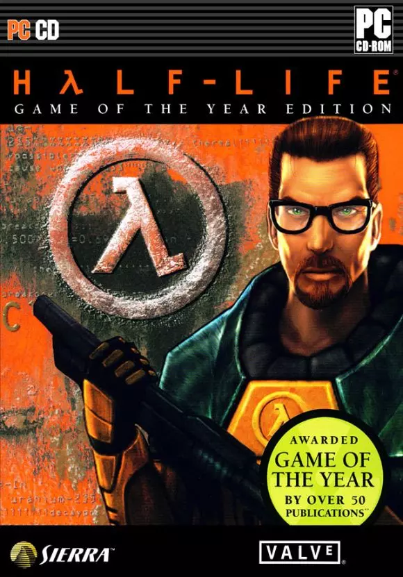
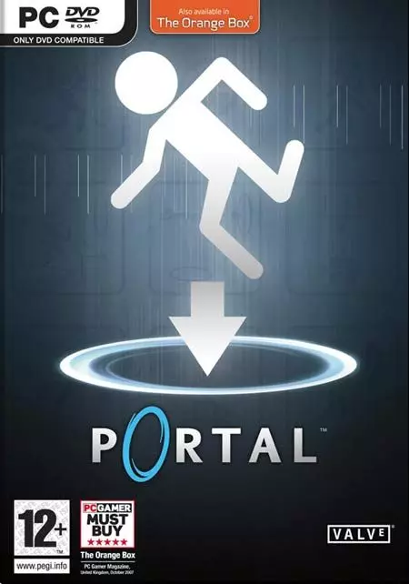

<!DOCTYPE html>
<html>
<head>
	<title>Título de la página</title>
</head>
<body>

</body>
</html>
<!DOCTYPE html>
<html>
<head>
	<meta charset="utf-8">
	<title>Epic Games</title>
	<link rel="stylesheet" href="estilos.css">
	<script src="scripts.js"></script>
	<style>
	body {
          background-color: #0c0c0c;
          color: #fff;
          font-family: Arial, sans-serif;
        }
        img {
          max-width: 100%;
          height: auto;
          display: block;
          margin: 0 auto;
        }
        h1 {
          font-size: 3rem;
          text-align: center;
          margin-top: 50px;
        }
        p {
          font-size: 1.5rem;
          text-align: center;
          margin-top: 20px;
        }
	</style>
</head>
<body>

</body>
</html>
<!DOCTYPE html>
<html>
<head>
	<meta charset="utf-8">
	<title>Epic Games</title>
	<link rel="stylesheet" href="estilos.css">
	<script src="scripts.js"></script>
	<style>
		/* Estilos de la página */
	</style>
</head>
<body>
	<header>
		<div class="logo">
			
		</div>
		<nav>
			<ul>
				<li><a href="#">Inicio</a></li>
				<li><a href="#">Juegos</a></li>
				<li><a href="#">Noticias</a></li>
				<li><a href="#">Contacto</a></li>
			</ul>
		</nav>
	</header>

	<section class="destacados">
		<h2>Juegos destacados</h2>
		<div class="juego">
			
			<h3>HOTLINE MIAMI</h3>
			<p>Hotline Miami es un juego de acción de alto octanaje que rebosa brutalidad es estado puro, violentos tiroteos y demoledores combates cuerpo a cuerpo</p>
		</div>
		<div class="juego">
			
			<h3>HALF LIFE</h3>
			<p>Narra las aventuras de Gordon Freeman, un científico teórico del Laboratorio de Materiales Anómalos del Centro de Investigación Black Mesa, un enorme complejo científico subterráneo y ultra secreto instalado en una base militar en desuso emplazada en el desierto de Nuevo México..</p>
		</div>
		<div class="juego">
			
			<h3>PORTAL</h3>
			<p>El juego consta principalmente de una serie de rompecabezas que deben ser resueltos teletransportando al personaje y objetos simples usando el «Aperture Science Handheld Portal Device», un dispositivo que puede crear portales interespaciales entre dos superficies planas.</p>
		</div>
	</section>
</body>
</html>
